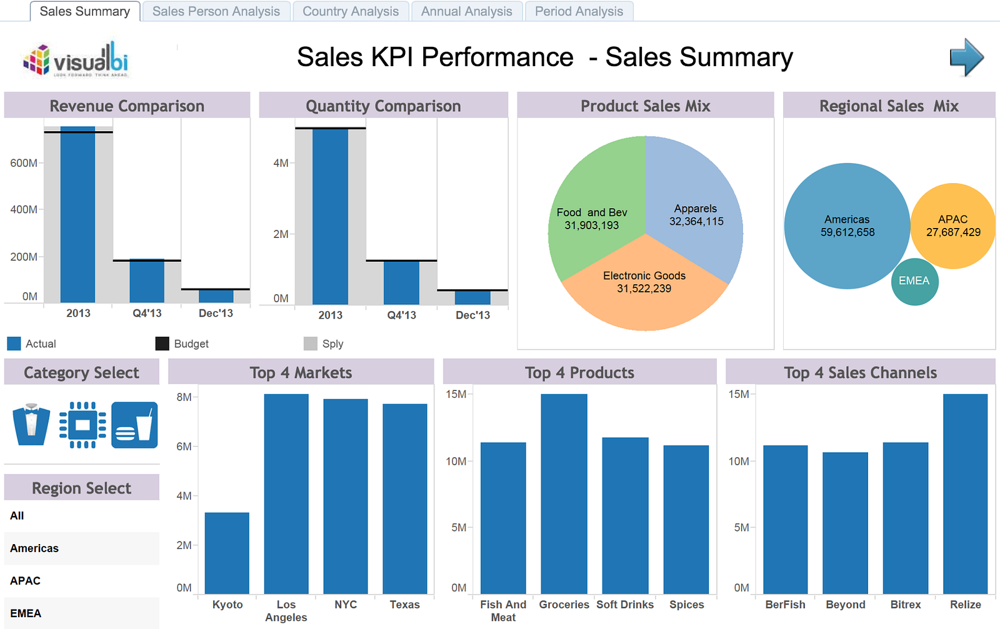
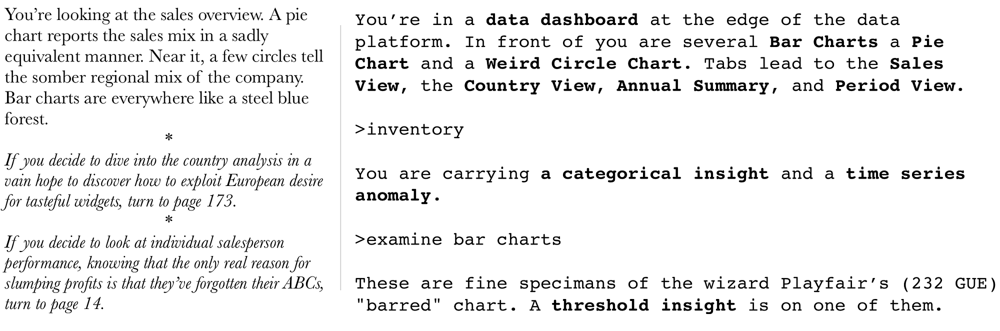
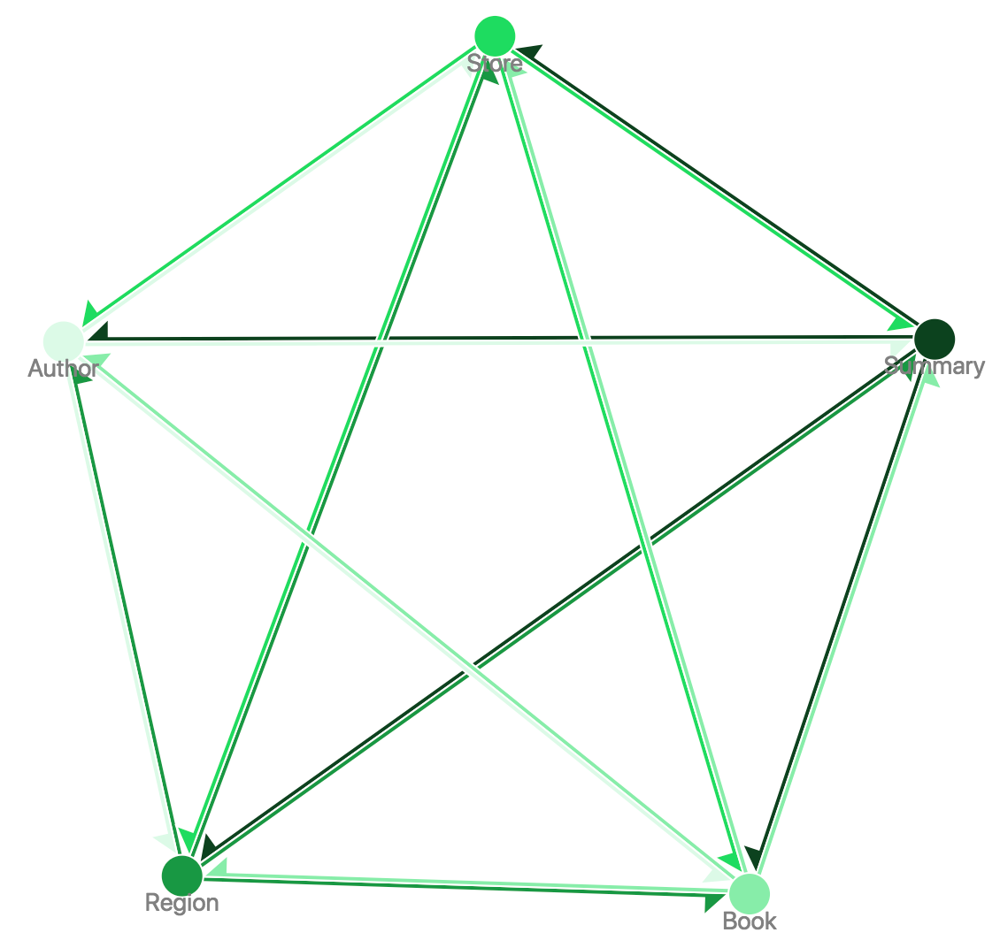
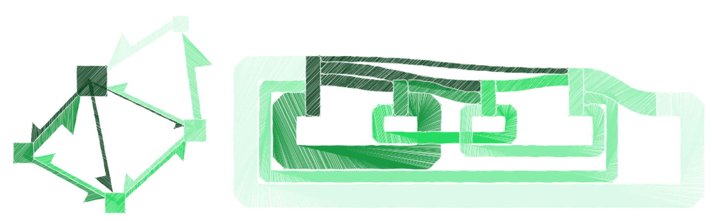
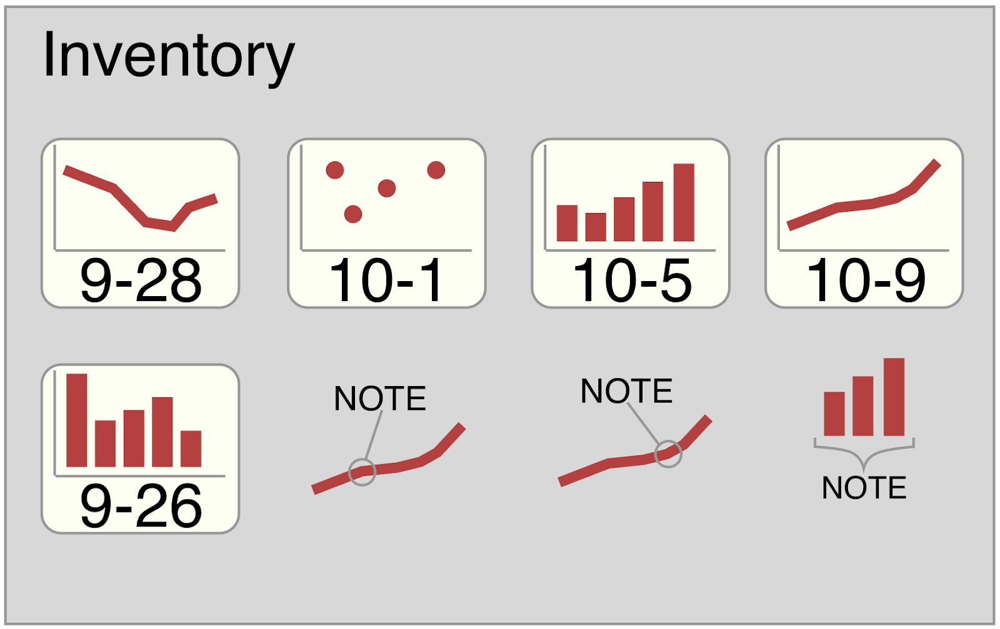
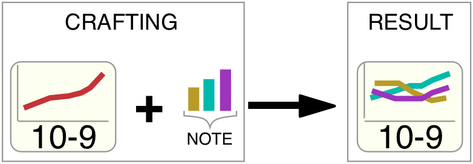
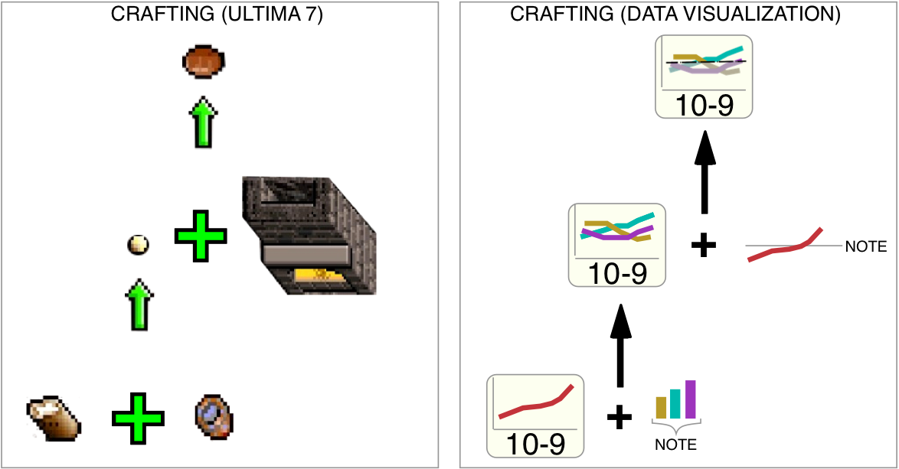

In my last piece on video games and data visualization, I explored in a general way the similarity between video games and data visualization products. Here, I’ll focus in on specific attributes of charts and analytical applications that, if viewed as game elements, could enable new approaches for how to design, navigate and manipulate analytical applications such as data dashboards. Some of the mechanics I think are most adaptable from the discourse of games into the discourse of data visualization are: maps, items, crafting and guild halls.
But before I get into the specifics, we have to establish what kind of data visualization products I have in mind for cross-pollination with game mechanics. Just as there are genres of video games there are genres of data visualization. We see robust scrollytelling pieces in most major newspapers which are very different from simple proofs of concept that are exposed in code snippets on CodePen or bl.ocks.org. My focus, though, reflects my own work at Netflix, which is primarily creating analytical applications like data dashboards. These are common in industry and are growing in popularity more generally due to the success of companies like Tableau, as well as science fiction dystopias like those seen in Altered Carbon and Black Mirror, which seem to love data dashboards.

Dashboards like these may have a single view made up of several charts or, like the one above, several views that you navigate to via tabs. These tabs are like doorways in games or the decision page in a Choose Your Own Adventure novel. They allow a user to move to a new view, or what we might think of as a new room. The charts and annotations and metrics in that view might be thought of as the items one sees in a room.

By viewing a dashboard as a thing having space and artifacts, you can think about how to optimize players moving through a complex world collecting insights. You can map how your users move through the dashboard to better design how they might. You can make certain paths more likely by adjusting the order or position of the tabs or placing more context-sensitive navigational elements throughout. In the same way that a player in a game might catch a glimpse of a later location from an early location, your tooltips might have miniature visualizations based on charts in other views.
The views are connected to each other not only by navigational elements, like tabs, but by the actualized navigation through the system. In other words, there’s the way you’ve designed your app, but then there’s the way it’s actually used.
Map it, make it explicit, plan for it and think about how you want them to move through those paths.
As in a game, with each new view your user is shown a new room. They move into and out of areas of that room via interactivity, creating different paths and different experiences in the same way they would in exploring an open world game. Map it, make it explicit, plan for it and think about how you want them to move through those paths.

In some cases, you can provide users with that actual map and decorate it with landmarks. Most games provide maps, and some of them obscure locations until they’re visited. You probably don’t want to use “fog of war” but you might want to signal how they have or have not visited or engaged with different rooms. We can follow a user through an app as they dive into different views. The map of their movement is very different from the map of how the possibilities and that’s reflected in my use of two related network visualization methods, the simple force-directed layout here and the cyclical sankey diagram below.
We can and do measure how users visit different tabs in the same way that websites track what items their visitors look at and what stories they read. This measurement could be a simple count of “hits” to each view but it could also be a count of how many users move from one view to another, like this:
USER FLOW BETWEEN VIEWS
Summary View to Region View: 10
Summary View to Store View: 10
Summary View to Book View: 5
Region View to Summary View: 20
Region View to Store View: 10
Store View to Region View: 10
Store View to Book View: 10
Book View to Summary View: 10
Book View to Store View: 10
Book View to Author View: 20
Author View to Summary View: 20

In our imagined example, there are very obvious flows through the application that tell a story. No one ever goes to the author page except from the Book page, and once there, everyone who goes there goes back to the Summary page. That chain of events implies some kind of chain of reasoning. Consecution, the series of steps, does not necessarily mean causation, but it’s a good place to examine for decision points and relatedness. Likewise, even though the Summary page is designed as the landing page, it’s actually where people go after visiting other pages, and the Region and Book pages show more people coming in than the Summary page. Mapping user behavior is not some radical new concept, this is a typical approach to optimizing UI and UX, but making the map explicit and user-oriented does make the space more like a game experience.
Turning Views into Items
Maps and rooms in games hold puzzles, just like views in a data visualization app. Solving those puzzles leads to rewards for the player: treasure, experience points, materials for crafting. To fully explore that approach requires a sense of itemization of the components of an data dashboard. Most of our dashboards allow you to save views but we don’t think of these views as artifacts. We also let users watch certain components (such as particular A/B tests or shows) and we let users annotate and decorate charts with insights. Each of these could be considered an item in a game that players can collect. The shopping cart and favorites list metaphors that orient modern design are much less appropriate than the inventory system of games. Players in games collect items like analysts collect insights and they do not exist simply as markers for purchase or later perusal but as interactive elements in a problem space. When you find out that customer service calls in Spanish have a lower resolution rate, that insight then unlocks for you an understanding of a later view that shows that sales are down in Spain.
For the most part, we expect analysts to collect these insights and store them and interact with them in their head. But items allow us to adopt another metaphor from games: inventory management. Your characters are collecting material in their travel. In most applications, that collection happens in an unstructured way, such as via screenshots or taking notes or just trying to remember some aspect of a chart. Think about the items that exist in the rooms you’ve built. Games unlock later chapters with the right items and you probably don’t want to do that but, if you let users collect items (insights) you can let them apply those items in different views (context).
Inventory systems follow those same spatial rules outlined in my last essay on game development and data visualization. Typically the inventory management window or interface (sometimes styled as a backpack) keeps items in relative space. That means it’s amenable to zones and other mechanisms to visualize the insights, annotations or saved views that you might store in a game-like system. It’s also a data visualization, so if you think about the metadata around the things in an inventory you might think of simple ways to visualize it beyond a simple list. Like a swarm plot split but insight type with three columns: Annotations, Learnings, Bugs. Each insight could be plotted by the date of the insight data point or the date when the insight was made, or maybe it’s split by views.

By focusing in on how a saved view or an annotation could be thought of as an item, we can follow the design of procedural games and think of how to create a system where these items interact with each other based on rules. So inventory management opens up the possibility of recipe metaphors. You might take a Saved View from your time series and mix it with two Categorical Insights to make An Upgraded Timeline.

The results of this single step of crafting can then be chained together to make crafting trees that vary in complexity from the simple single step recipes in older games (scissors + cloth = bandage) to multistep crafting sub-games that are an important part of titles like Monster Hunter and Skyrim.

Modestly Multiplayer Games
Finally, most of these analytical applications are multiplayer games. You have different users taking on different roles building meaning in the way they explore the world you’ve created. In MMORPG design, that knowledge is actualized in design to improve that experience for new and experienced players alike. There are mechanisms in place to let more experienced players help less experienced players. There are methods for storing group goods and allowing them to measure their performance both individually and in groups. You can build into your application an understanding of the groups that use it that may be predefined or may self-select.
The guild hall is just a metaphor for a space for a group of your users. So if you have an application that is used by both data scientists and data engineers, you would not only personalize for individual users but also provide views that summarize insights in the application that are pertinent to those groups. This is where bespoke applications shine in contrast to mass market BI tools.
The maps and inventories aren’t just for individual users but can be shared across organizational structures. Imagine a new employee looking at a complex dashboard with a half-dozen tabs and novel controls, filled with unfamiliar views into data they don’t yet understand. If they have go to their personalized view, it will be empty, but if they also have access to the maps and insights showing how their team uses the application, it gives them scaffolding to become an expert within that system.
If we go back to our inventories and maps, you can see how these can be shared out to users. The map of the application you get can be informed by the usage statistics of the people in that user’s group or groups. The inventories of insights can be shared to allow beginning players to experiment with crafting to produce their own insights.
CONCLUSION
This is aspirational, to be sure, but it’s also achievable. Maybe not in the sense of practical implementation in an off-the-shelf tool but definitely in its design. In custom applications with personalization and analytics, this kind of approach to integrating a more game-like environment into an analytical application is a logical next step. It requires some investment to create these maps and inventories and guild halls but not so much as to be infeasible. I’ve tried to show a few examples of what those may look like, but the data visualization community is thirty years behind in adopting/adapting game design principles so I expect the primitive first attempts to have a few misfires. My hope is to bring this to bear not only in my everyday work but also in a public-facing example, designed and optimized for these principles to demonstrate their feasibility.